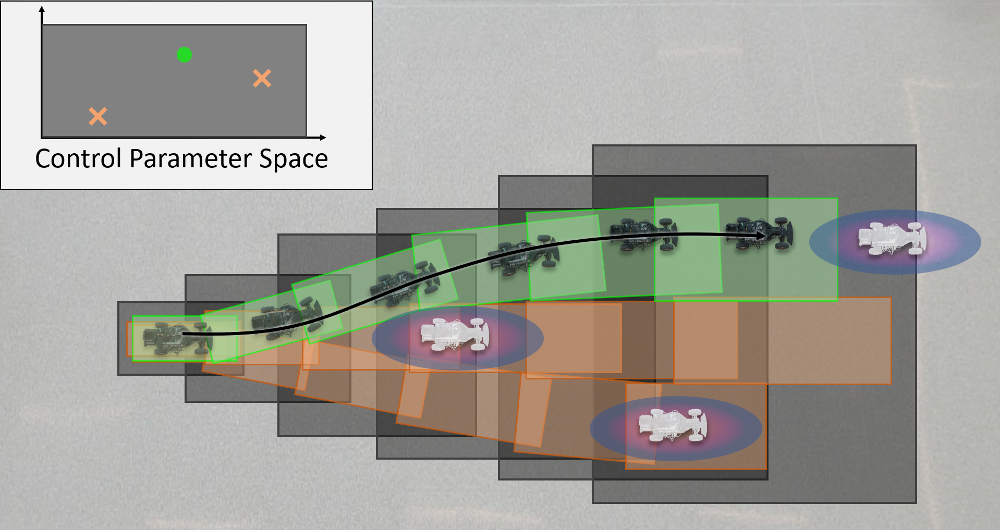
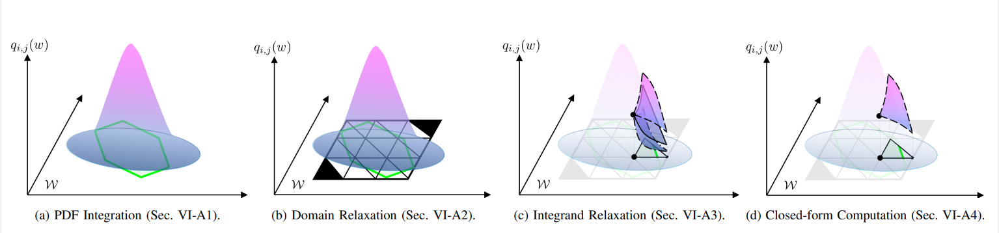

A Dynamic, Real-Time, Reachability-based Motion Planning Algorithm for Risk-Aware Motion Planning in Uncertain Environments.
Jinsun Liu*
Challen Enninful Adu*
Lucas Lymburner
Ram Vasudevan
jinsunl@umich.edu
enninful@umich.edu
llymburn@umich.edu
ramv@umich.edu
* Equal Contribution
All authors affiliated with the Robotics Department and the Department of Mechanical Engineering of the University of Michigan, Ann Arbor.
Paper
</Code>
DIAMETER generates real-time, motion plans that guarantee robot safety up to a given risk threshold in the presence of uncertainty of obstacle motions.
Abstract
Safe motion planning for robots in uncertain environments is a critical challenge. Traditional, deterministic motion planning algorithms restrict the robot from intersecting uncertain regions, resulting in overly conservative behavior. Chance-constrained optimization can improve the performance of motion planning algorithms by allowing a user-specified amount of constraint violation. However, state-of-the-art methods rely either on moment-based inequalities, which can be conservative, or make difficult-to-satisfy assumptions about the class of probability distributions used to model uncertainty.
This work proposes a real-time, risk-aware, reachability-based motion planning framework called DIAMETER to address these challenges. The method first generates a reachable set of parameterized trajectories for the robot offline. Then, online, given arbitrary probability distributions estimating the obstacles' locations, DIAMETER computes a closed-form overapproximation of the probability of a collision with any obstacle. Finally, using this overapproximation function as a constraint, DIAMETER optimizes over a set of control parameters to generate a trajectory with a risk of collision bounded above by some user-specified risk of crashing.
The proposed algorithm is implemented and compared to state-of-the-art chance-constrained algorithms and deterministic methods and is shown to outperform them in various driving scenarios.
Method

DIAMETER, like its predecessor, RADIUS, first performs offline reachability analysis using a closed-loop full-order vehicle dynamics to construct a series of control-parameterized, zonotope reachable sets (shown as dark gray boxes) that over-approximate all possible behaviors of the ego vehicle over the planning horizon.
During online planning, given some user-defined risk of collision (ϵ) for the motion plan, DIAMETER constructs a trajectory by solving an optimization problem that selects subsets of pre-computed zonotope reachable sets that are certified to have a no greater than ϵ risk of colliding with any obstacles.
In the image above, the moving obstacles shown in white and the 3-σ regions of the corresponding probability distributions for the obstacle locations are shown as the purple and blue ellipses where the probability density from low to high is illustrated from blue to purple.
The subsets of the dark gray zonotope reachable sets corresponding to the trajectory parameter shown in green ensure a collision-free path that is guaranteed to have a no greater than ϵ risk of colliding with all obstacles, while the two trajectory parameters and their corresponding reachable sets shown orange may have a greater than ϵ risk of collision with the moving obstacles.
The image above shows a comparison between integration grids generated by RADIUS and DIAMETER.
The probability distribution is shown in a cyan-magenta gradient, with magenta representing increased probability mass. The red dashed line represents a bounding region containing at least 99% of the probability mass of the PDF.
Simplices included in the integration are shown in green, and excluded simplices are shown in red.
RADIUS and DIAMETER both establish a grid of simplices on which the integration will be performed (explained in-depth below). DIAMETER requires that a bounding region containing at least (1 - δ) probability mass can be established, and then the simplex grid is established over the intersection region between the bounding box and the zonotope, and in the case of no intersection (e.g. when almost all probability mass is far away from the zonotope), no grid will be generated at all. Because the integration region is only guaranteed to cover (1 - δ), the remaining δ is added to the final integration results to ensure that it remains an overapproximation. RADIUS, in contrast, generates the grid over the entire zonotope.
The error in the integration increases as the size of the simplices increases, and with the amount of area outside of the zonotope (when a green simplex is only partially inside the blue zonotope). Because DIAMETER typically has a smaller grid, with less partial overlap, it yields a tighter approximation to the real integral at the same grid size.

The key to being able to solve this optimization in real-time is the closed-form over-approximation of the risk of collision, which allows us to provide analytical gradients to the optimization.
From left-to-right the process to obtain this closed-form over-approximation is as follows:
a) we first represent our risk of collision as an integral of a Probability Density Function (PDF) of the obstacle location over the ego vehicle reachable set;
b) next we generate a grid of simplices to over-approximate the integration domain;
c) next we over-approximate the PDF using a 2nd order Taylor expansion and interval arithmetic;
d) with the resulting integral of a quadratic polynomial over a set of simplices we are able to compute a closed-form solution to this integral that tightly over-approximates the actual risk of collision.
Note that this process is parallelizable and an algorithm for parallelization is provided in the paper.
Results
Method
Error
Gaussian-S (Mean, Max.)
Gaussian (Mean, Max.)
Beta (Mean, Max.)
Bimodal (Mean, Max.)
DIAMETER
(0.0004, 0.0020)
(0.0178, 0.5501)
(0.0015, 0.0340)
(0.0195, 0.6767)
RADIUS
(0.0181, 0.1718)
(0.0200, 0.7453)
(0.0015, 0.0340)
(0.0199, 0.8831)
Cantelli
(0.7766, 0.9988)
(0.5501, 0.9991)
(0.3981, 0.9612)
(0.5625, 0.9990)
CCPBA
(0.4987, 0.9973)
(0.2165, 0.9563)
-
-
Table 1: Results for the risk of collision estimation error of DIAMETER, RADIUS, and the Cantelli Inequality when the obstacle location is represented by three types of probability distributions. Note that CCPBA can only handle Gaussian distributions, so does not have results for the other types of distributions.